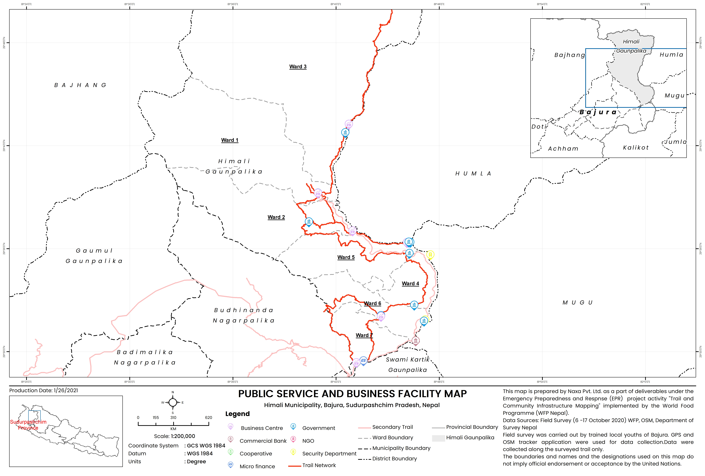
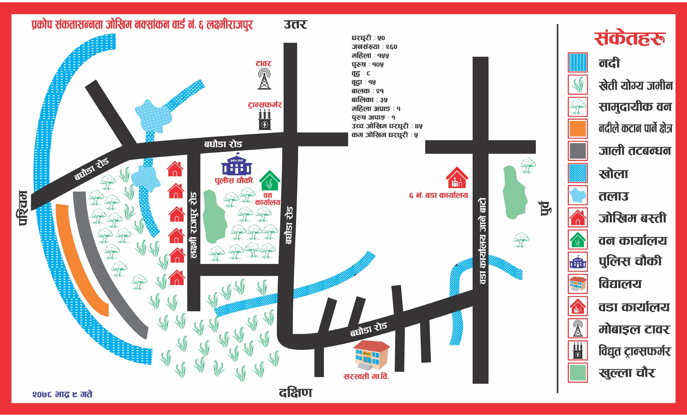
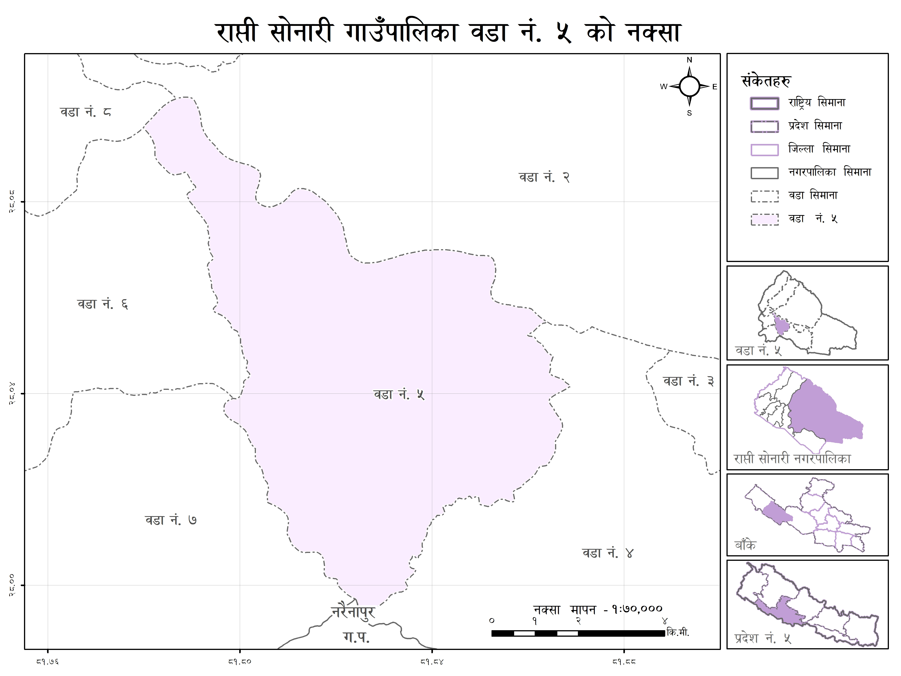
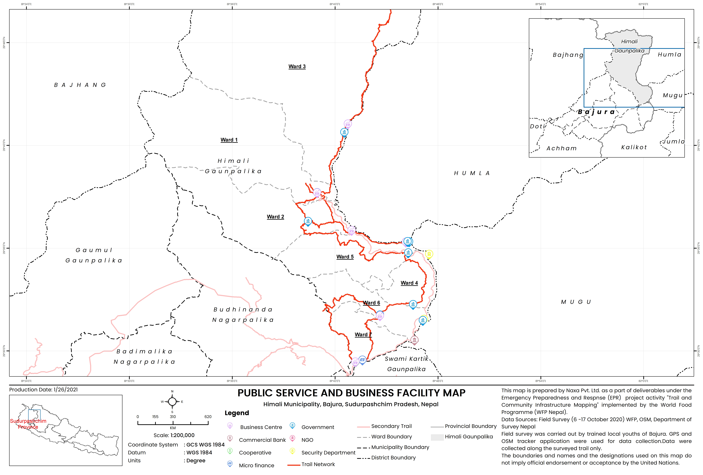
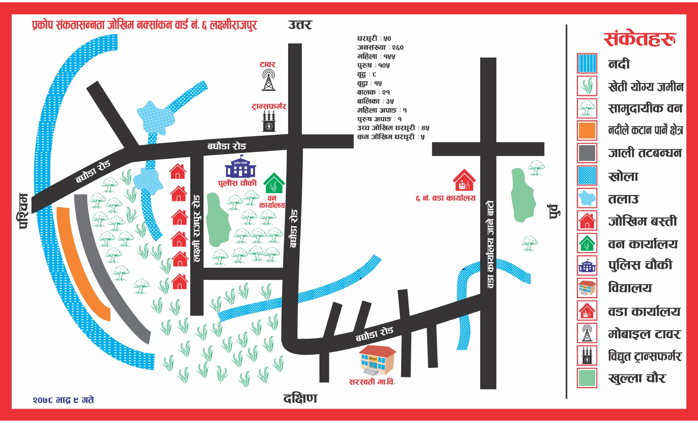
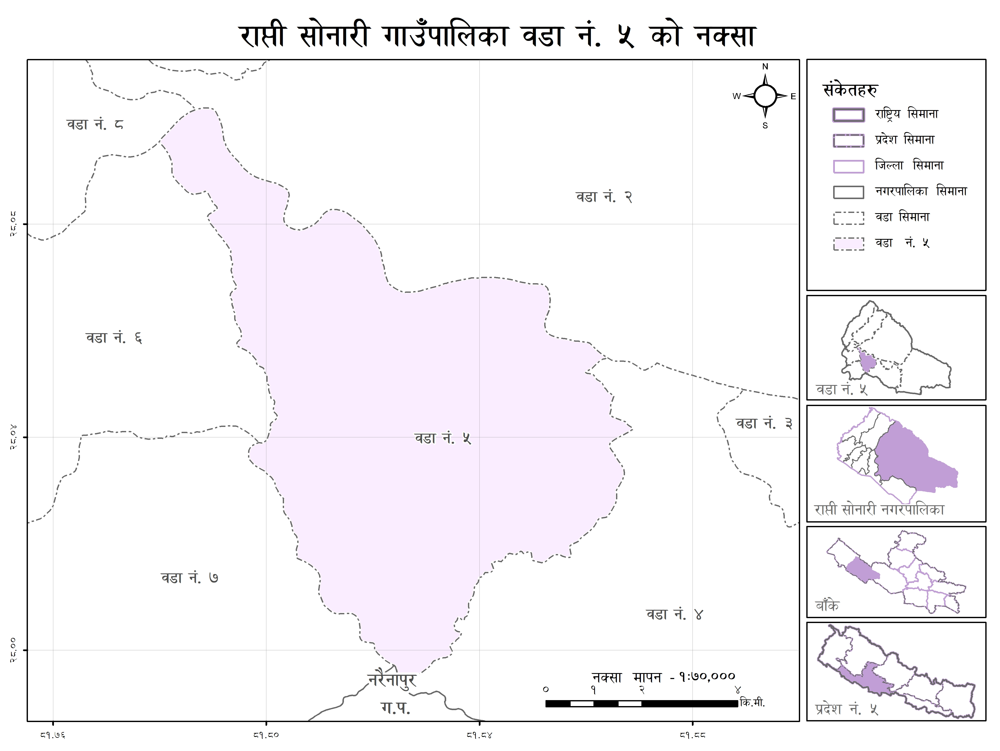

About Me
I'm a GIS specialist with a strong foundation in spatial analysis, remote sensing, map design, and web mapping applications. I enjoy turning complex geospatial data into clear, visually compelling maps and interactive applications that support land use and planning decisions. I’ve collaborated with diverse teams—from planners to designers—to deliver high-quality, data-driven solutions. I’m particularly interested in automating workflows with Python and enhancing user experience through intuitive map interfaces. Whether it’s configuring a dashboard, analyzing LiDAR datasets, or developing custom tools, I’m always looking for ways to blend creativity with technical precision.
Top Projects
Local trails and infrastructure mapping for Emergency preparedness response
Conducted field surveys in remotest district of Nepal to map critical infrastructure and local trails. Delivered OpenStreetMap (OSM) training to community members to support participatory mapping. Managed and maintained the district’s GIS database, and performed spatial data analysis to develop an emergency preparedness plan.
House Numbering Project – Changunarayan Municipality
Led a large-scale municipal house numbering initiative as the project lead, coordinating with government officials and supervising a team of over 30 field staff. Designed and implemented an automated house numbering system using Python to streamline workflows and ensure data accuracy.
Cartography

 




